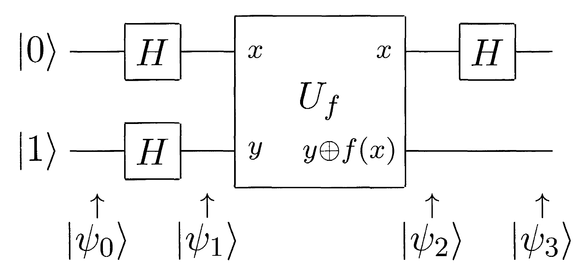

Programando ordenadores cuánticos
Instalación
- Instalar
stack, - clonar
mx-psi/libreim-quantumy - ejecutar
stack build
Computación clásica
El espacio de estados
Un ordenador clásico hace cálculos con símbolos.
Un bit es un elemento del espacio de estados \(\mathbb{B} := \{0,1\}\).
Podemos manipular un estado con varios bits.
Con \(n\) bits, el espacio de estados es \(\mathbb{B}^n\).
Puertas clásicas
Una puerta clásica es una función \(f: \mathbb{B}^n \to \mathbb{B}^m\).
- \(n\) es el número de entradas y
- \(m\) es el número de salidas.
\[\operatorname{NAND}(x,y) = \operatorname{NOT}(\operatorname{AND}(x,y))\]
Otras puertas
FANOUT: 1 entrada y 2 salidas, \[\operatorname{FANOUT}(x) = (x,x).\]
ANCILLA\(_x\): 0 entradas y 1 salida, \[\operatorname{ANCILLA}_x(\varepsilon) = x.\]
DESCARTA: 1 entrada y 0 salidas, \[\operatorname{DESCARTA}(x) = \varepsilon.\]
Circuitos
Un circuito es un grafo dirigido acíclico etiquetado
- cada nodo es entrada, salida o una puerta,
- entradas y salidas se asocian con un vértice cada una.
- el grado de entrada y salida de un vértice coincide con el de su etiqueta.
Tiene una función \(C:\mathbb{B}^n \to \mathbb{B}^m\) asociada.
\(|C|\) es su número de nodos.
Conjunto universal
\(\mathcal{B}\) es universal si toda función es la función asociada a un circuito con puertas en \(\mathcal{B}\).
\(\mathcal{B} = \{\operatorname{OR},\operatorname{AND},\operatorname{FANOUT}\}\) no es universal
\(\mathcal{B} = \{\operatorname{NAND},\operatorname{FANOUT}\}\) es universal.
Reversibilidad
La puerta Toffoli se define \[\operatorname{TOFFOLI}(x,y,z) = (x,y,z \oplus (x \cdot y))\]
\(\{\operatorname{TOFFOLI}, \operatorname{ANCILLA}_{x}, \operatorname{DESCARTA}\}\) es universal.
Familias de circuitos
Cuando necesitamos tener una entrada de tamaño arbitrario, consideramos una familia de circuitos \(\mathcal{C} = \{C_n\}_{n \in \mathbb{N}}\), tal que \(C_n\) tiene \(n\) entradas.
Su función asociada es \(\mathcal{C}(x) = C_{|x|}(x)\).
Es uniforme si la función \(n \mapsto C_n\) es computable.
Computación probabilística
El espacio de estados
Con aleatoriedad, el estado será una distribución sobre \(\mathbb{B}\).
Un bit aleatorio es un vector con norma 1 de un espacio vectorial real \(R\) con base \(\{| 0 \rangle, | 1 \rangle\}\), \[a |0\rangle + b |1 \rangle,\qquad a + b = 1, a,b \geq 0\]
Si tenemos \(n\) bits aleatorios, el espacio de estados es \(R^{\otimes n}\).
Puertas probabilísticas
Una puerta es una aplicación lineal \(f: R^{\otimes n} \to R^{\otimes m}\) que lleva vectores de norma 1 en vectores de norma 1.
Viene dada por una matriz estocástica.
\[\operatorname{RANDOM}(v) = \frac12\begin{pmatrix}1 & 1 \\ 1 & 1\end{pmatrix}v\]
Circuitos
La definición de circuito es análoga al caso clásico.
Para calcular la función asociada a un circuito:
- escogemos un orden topológico de las puertas,
- extendemos a la dimensión adecuada y
- componemos en orden inverso.
La función es invariante al orden topológico ya que \[(f \otimes g) \circ (h \otimes s) = (f \circ h) \otimes (g \circ s).\]
Clásica a probabilística
Toda puerta clásica tiene una probabilística asociada: su extensión lineal. Su matriz es una matriz de permutación.
Nos restringimos a circuitos formados por \[\{\operatorname{NAND}, \operatorname{FANOUT}, \operatorname{RANDOM}\}.\]
Medición y error
La salida de un circuito probabilístico será un vector de probabilidades que muestreamos.
\(C: R^{\otimes n} \to R^{\otimes m}\) calcula \(f: \mathbb{B}^n \to \mathbb{B}^m\) si \[P[C(x) = f(x)] \geq \frac23\]
Computación cuántica
El espacio de estados
El espacio de estados es un espacio de Hilbert separable complejo.
Un qubit es un vector unitario de un espacio vectorial complejo con base ortonormal \(\{|0\rangle,|1\rangle\}\), \[|\psi\rangle = \alpha |0\rangle + \beta |1\rangle, \qquad |\alpha|^2 + |\beta|^2 = 1\] \(\alpha\) y \(\beta\) son las amplitudes de \(|\psi\rangle\).
Con \(n\) qubits, el espacio de estados es \(Q^{\otimes n}\).
¿Qué es una puerta cuántica?
Una puerta cuántica es una aplicación unitaria \(U: Q^{\otimes n} \to Q^{\otimes n}\).
La puerta de Hadamard se define \[H|x\rangle = \frac{1}{\sqrt{2}}(|0\rangle + (-1)^x|1\rangle)\]
Hay conjuntos «universales» y finitos de puertas que aproximan cualquier otra puerta.
Medición
La salida de un circuito cuántico será un vector unitario. Si medimos \[|\psi\rangle = \sum_{i = 0}^{2^n-1} \alpha_i|i\rangle\] tenemos \[P(\operatorname{Meas}|\psi\rangle = i) = |\alpha_i|^2\]
Puertas clásicas
Cualquier puerta clásica reversible es unitaria y podemos simular aleatoriedad con la puerta de Hadamard.
Llevamos una función \(f:\mathbb{B}^n \to \mathbb{B}^m\) a otra \[(x,y) \mapsto (x, y \oplus f(x)).\]
Quipper
El lenguaje
Quipper es un lenguaje embebido en Haskell que permite definir familias uniformes de circuitos.
Distinguimos 3 etapas
- tiempo de compilación,
- tiempo de generación de circuitos y
- tiempo de ejecución de circuitos.
Tipos
Quipper trata con 3 tipos de datos
Bool- Tipo de los parámetros (se conocen en tiempo de generación)
BityQubit- Tipo de entradas clásicas y cuánticas (se conocen en tiempo de ejecución).
Todas las operaciones ocurren en una mónada Circ.
Vamos a definir el circuito más básico posible: un cable. Lo hacemos con notación do.

Operaciones básicas
Podemos usar las operaciones básicas.
Puertas clásicas
Por ejemplo, podemos definir nand utilizando estas operaciones
Y la puerta fanout
Y combinarlas por ejemplo para definir la puerta not.

Entrelazamiento
Generación de circuitos
Podemos generar circuitos automáticamente a partir de funciones booleanas.

El algoritmo de Deutsch

QShape
La clase de tipos QShape generaliza
El algoritmo de Deutsch-Jozsa
Fin
Referencias
- Quantum Computation and Quantum Information - Nielsen & Chuang
- One Complexity Theorist’s View of Quantum Computing - Fortnow
- Quantum Computational Complexity - Watrous
- An Introduction to Quantum Programming in Quipper - Green et al.